Bande dessinée et narration
- Écriture et développement de scénarios
- Découpage narratif et séquentiel
- Storyboard et mise en scène
- Création de personnages
- Dessin et réalisation de planches
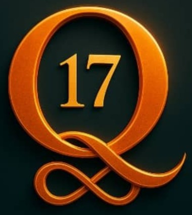
UNIQUEART VISUEL STUDIO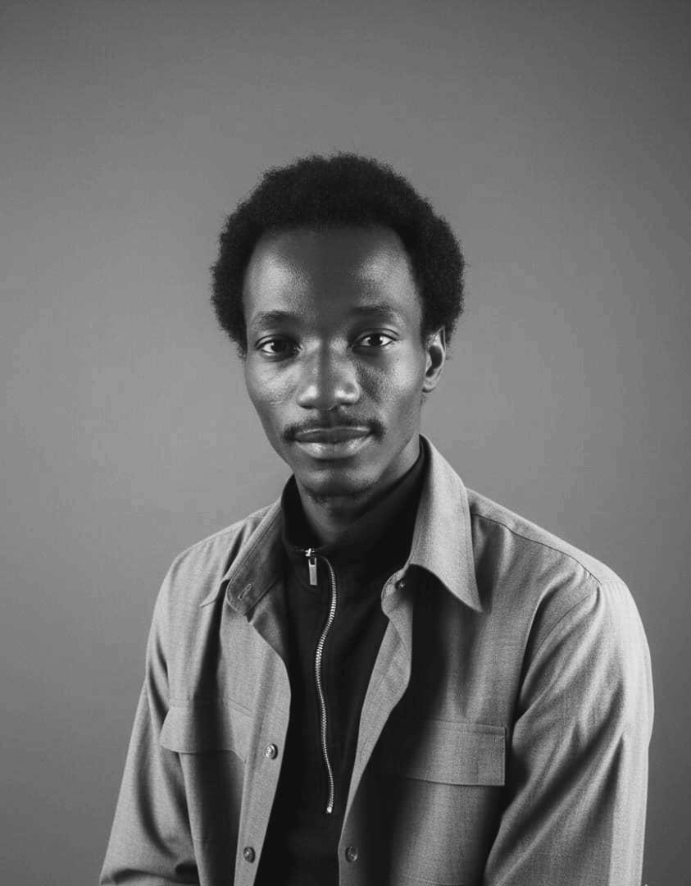
PORTFOLIO PROFESSIONNEL
Auteur · Scénariste · Illustrateur · Dessinateur de bande dessinée · Directeur artistique
Cofondateur et directeur artistique de UNIQUE ART VISUEL STUDIO
Là où le dessin pense.
01
Je suis Ando Dieudonné-Jean N'Dé, auteur, scénariste, illustrateur et dessinateur de bande dessinée ivoirien.
Mon travail se situe à la rencontre de la narration, de l'image et de la réflexion. Je conçois des univers graphiques et narratifs qui associent expression artistique, imagination et regard critique sur la société.
À travers la bande dessinée, l'illustration et la direction artistique, je développe des projets destinés à raconter, transmettre, sensibiliser et susciter l'émotion.
Mon approche repose sur une conviction : l'image ne doit pas seulement représenter une idée, elle doit aussi être capable de la faire penser.
02
La création est pour moi un espace de recherche, d'expression et de transmission.
Je m'intéresse particulièrement à la manière dont les personnages, les situations et les univers visuels peuvent traduire des réalités humaines et sociales.
Je privilégie une création qui conjugue cohérence narrative, identité visuelle et intention artistique.
03
04
Un projet de sensibilisation qui utilise les codes de la fiction et de l'aventure pour aborder des problématiques contemporaines.
Approche : narration séquentielle, mise en scène, illustration et expression des personnages.
Scénario : Serge · Dessin : Mu-fu (signature figurant sur les planches)
À travers le quotidien de jeunes diplômés confrontés au chômage, à la précarité et aux contradictions du monde moderne, le récit propose un regard à la fois critique et humoristique sur la société.
Approche : observation sociale, caractérisation, narration visuelle et humour.
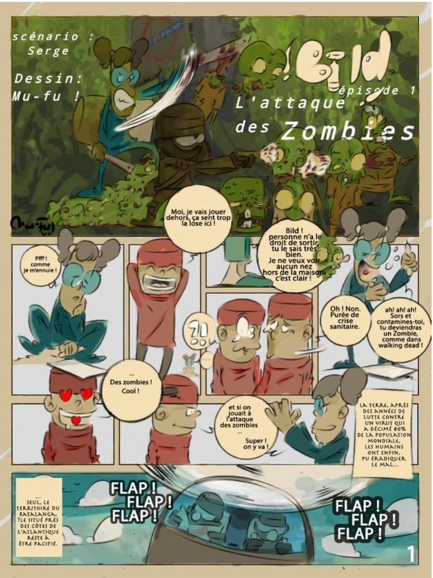
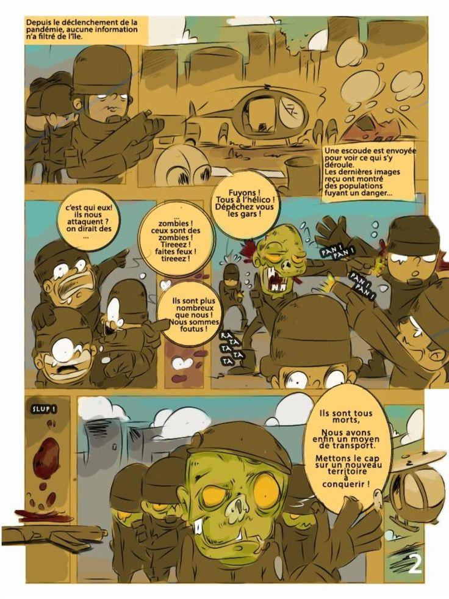
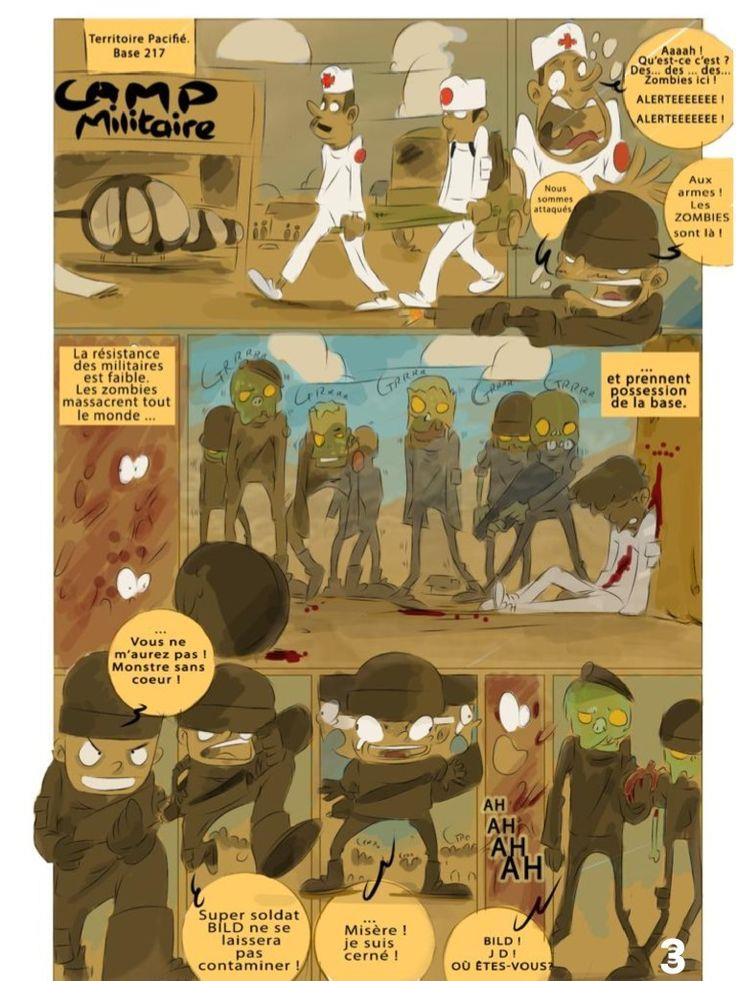
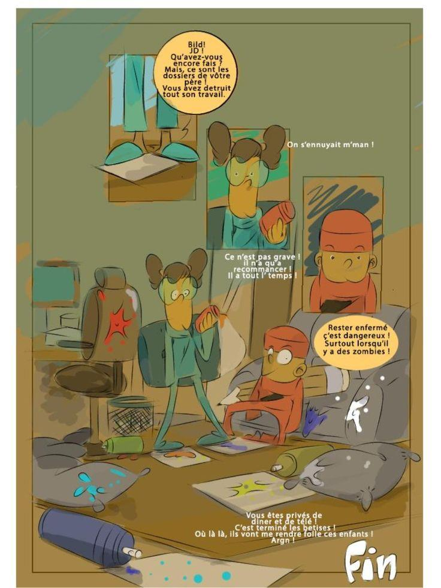
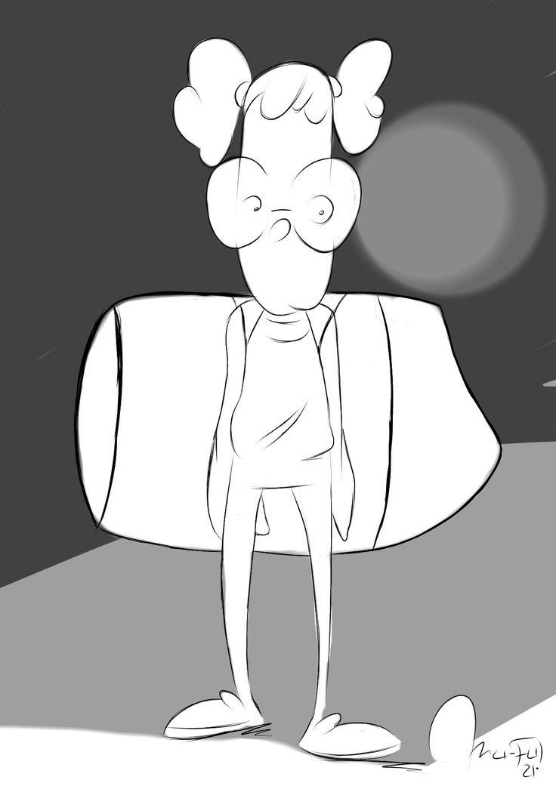
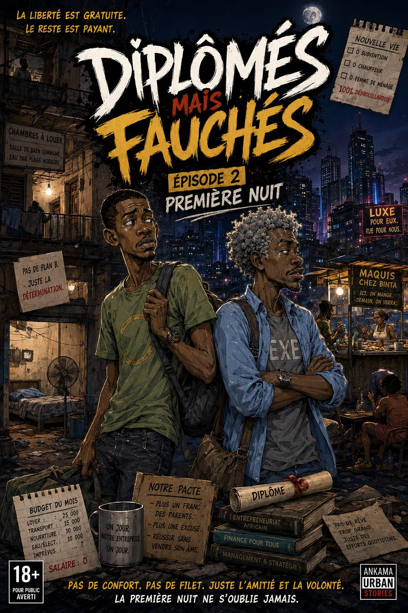
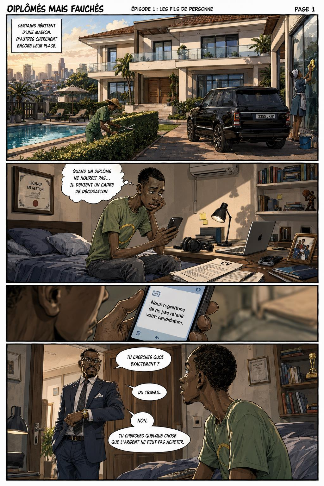
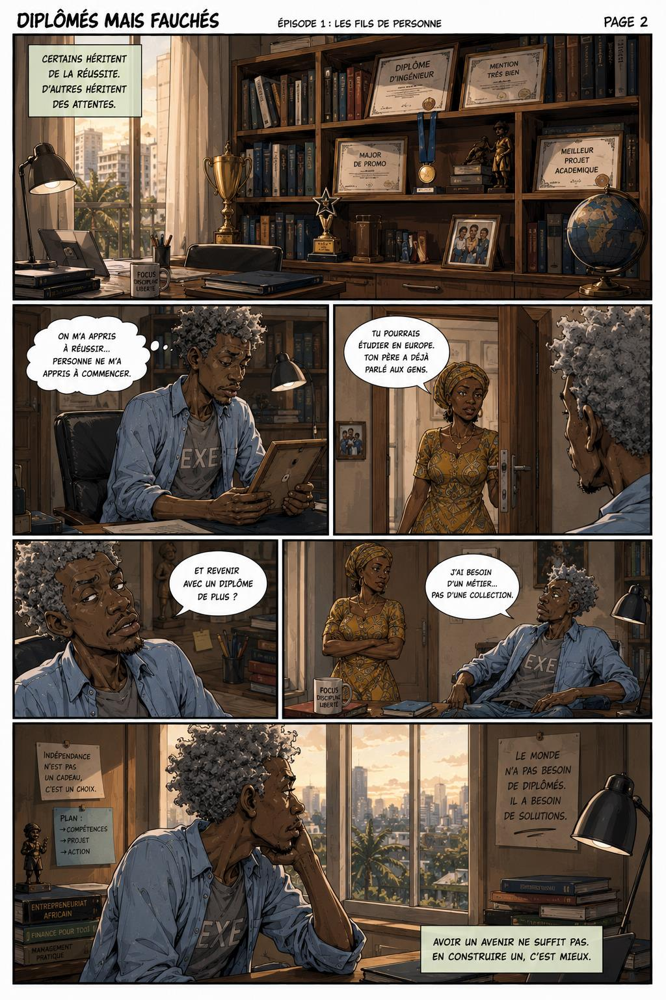
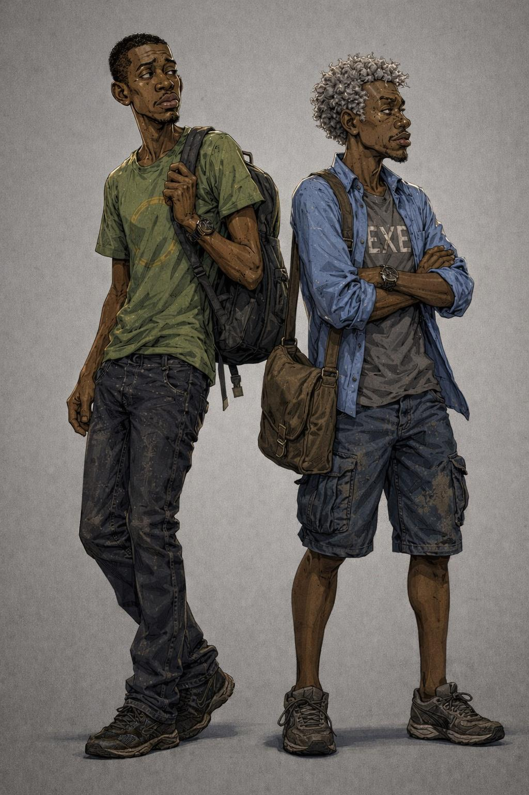
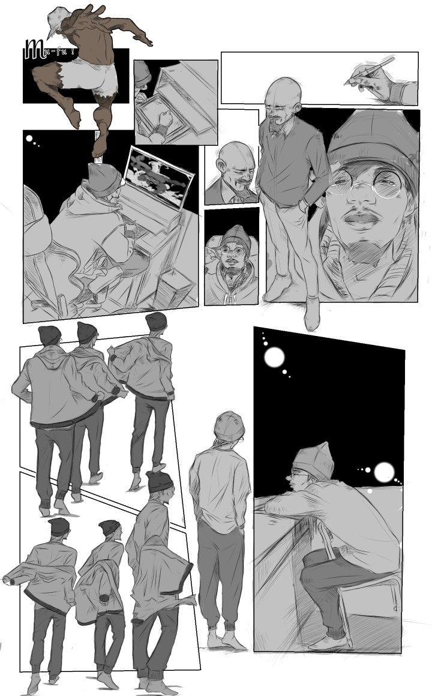
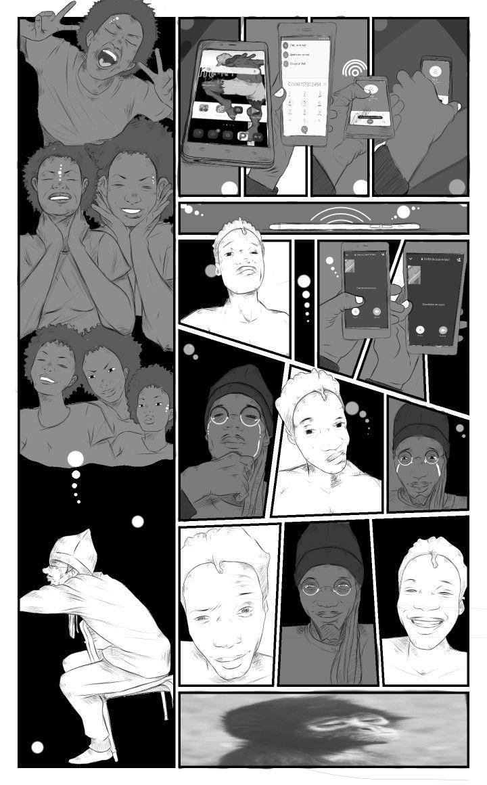
05
Ma démarche en direction artistique consiste à donner une cohérence visuelle à une idée, un projet ou une identité.
De la recherche conceptuelle à la réalisation, je m'attache à construire des univers graphiques reconnaissables, pertinents et adaptés à leurs objectifs de communication.
Je considère chaque projet comme une réflexion associant intention, esthétique, lisibilité et expérience visuelle.
06
Cette rubrique présentera une sélection de mes publications, collaborations éditoriales et projets personnels.
Elle permettra de distinguer les projets publiés, les collaborations professionnelles et les créations indépendantes, en précisant les rôles effectivement exercés sur chacun.
07
Chaque projet suit une démarche structurée :
Cette méthode vise à garantir la cohérence entre l'intention initiale, les choix artistiques et le résultat final.
08
ANDO DIEUDONNÉ-JEAN N'DÉ
Auteur · Scénariste · Illustrateur · Dessinateur BD · Directeur artistique
UNIQUE ART VISUEL STUDIO
Là où le dessin pense.